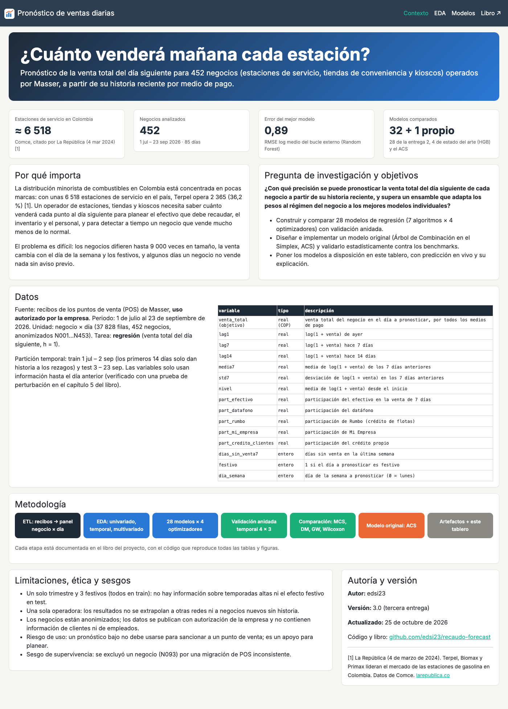
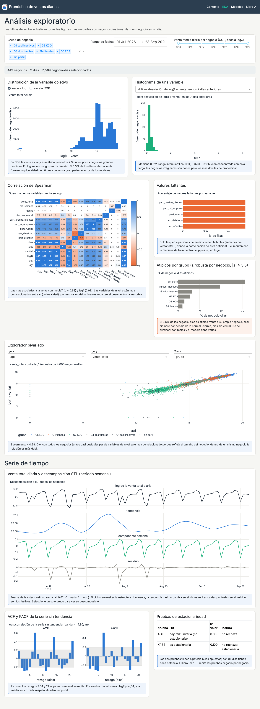
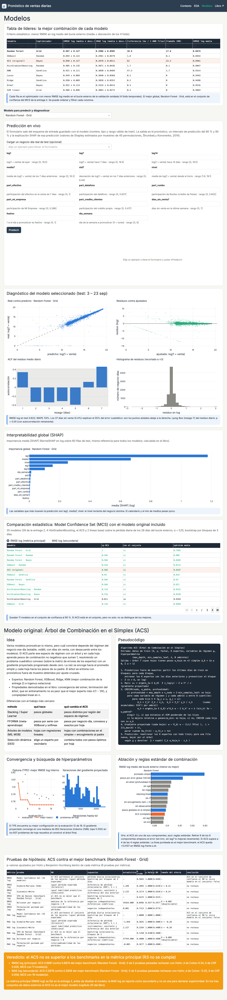
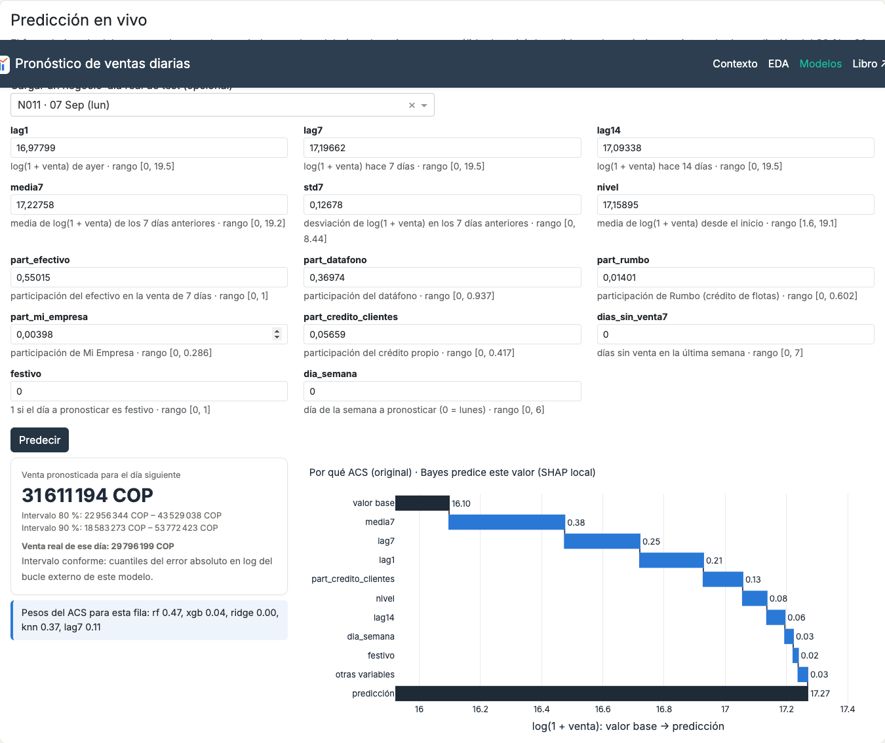
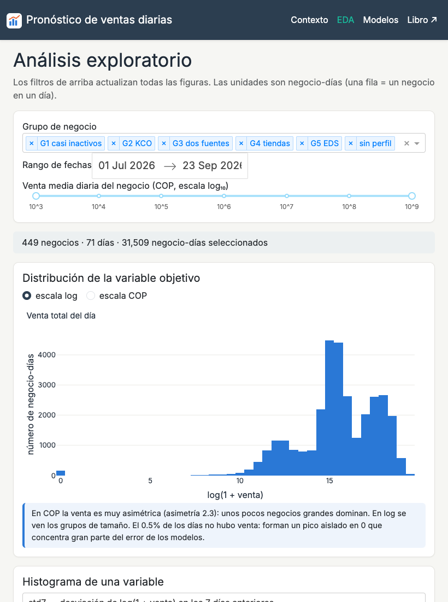

🖥️ 21. Dashboard y despliegue#
Nota
URL pública: se completa al desplegar en Render · Código: github.com/edsi23/recaudo-forecast
El plan gratuito de Render suspende el servicio tras unos minutos sin uso: la primera carga puede tardar 30–60 s.
El tablero lleva los resultados a una herramienta que una persona no experta puede usar: entender el problema (Contexto), explorar los datos (EDA) y pronosticar con los modelos entrenados (Modelos). Cada gráfico responde una pregunta concreta y va acompañado de una frase de interpretación.
21.1 Arquitectura#
recaudo-forecast/
├── app.py # crea la app multipágina (use_pages=True) y expone server para gunicorn
├── pages/
│ ├── contexto.py # sección 1: problema, pregunta, datos, metodología, ética
│ ├── eda.py # sección 2: filtros globales y figuras con insights
│ └── modelos.py # sección 3: líderes, predicción en vivo, diagnósticos, MCS, ACS
├── src/
│ ├── original_model.py # clase del modelo original (ACS)
│ ├── data.py # carga y caché de datos y modelos; explicación local (Shapley)
│ └── plots.py # funciones de graficación y plantilla única
├── artifacts/ # 9 modelos .joblib + metadata.json
├── data/ # datos procesados livianos (CSV comprimidos)
├── assets/ # CSS, logo
├── tests/ # pruebas unitarias (pytest)
├── book/ # este libro
├── requirements.txt # dependencias del tablero (versiones exactas)
└── render.yaml # configuración de despliegue
Separación de responsabilidades. Las páginas solo arman la interfaz y los callbacks; src/data.py lee los datos y los modelos una sola vez (functools.lru_cache); src/plots.py construye todas las figuras con una plantilla común (tipografía Inter, paleta de cinco colores, ejes con unidades e información al pasar el cursor). El tablero nunca entrena ni optimiza: solo carga los artefactos del capítulo 17.
21.2 Las tres secciones#


Figura 1 Sección Contexto: planteamiento con una cifra citada (≈ 6 518 estaciones de servicio en Colombia, Comce vía La República, 2024), pregunta de investigación, datos y diccionario de variables, diagrama de la metodología, limitaciones y ética, autoría y versión.#


Figura 2 Sección EDA: filtros globales (grupo de negocio, rango de fechas y tamaño del negocio) que actualizan todas las figuras; distribución del objetivo, histogramas, correlación, faltantes, atípicos, explorador bivariado con selección de ejes y color, descomposición STL, ACF/PACF y pruebas de estacionariedad. Cada figura tiene su frase de interpretación, calculada sobre los datos filtrados.#


Figura 3 Sección Modelos: tabla de líderes ordenable y filtrable, predicción en vivo, diagnóstico del modelo seleccionado (real contra predicho, residuos, ACF e histograma), importancia SHAP global, Model Confidence Set con el modelo original incluido y la subsección del ACS (idea, pseudocódigo, diferencias con la literatura, convergencia, ablación, pruebas y veredicto).#
21.3 Predicción en vivo#
El formulario se genera a partir del esquema de entrada guardado en metadata.json (nombre, tipo y rango válido de cada variable). Se puede llenar a mano o cargar un negocio-día real de test. Antes de llamar al modelo se validan tipos y rangos; un error se muestra con un mensaje claro (dbc.Alert) y la aplicación sigue funcionando.


Figura 4 Predicción del ACS para un negocio-día de test: pronóstico, intervalos de predicción del 80 % y 90 %, venta real de ese día, pesos de los expertos en esa fila y explicación local (cascada de valores de Shapley sobre el log de la venta).#

Figura 5 Entrada fuera de rango: el formulario explica el problema en lugar de fallar.#
Intervalo de predicción. Conforme (split conformal): el intervalo del 80 % (90 %) es \(\exp(\log(1+\hat y) \pm q)-1\), con \(q\) el cuantil 80 % (90 %) del error absoluto en log del modelo en el bucle externo de la validación anidada.
Explicación local. Valores de Shapley estimados por muestreo de 40 permutaciones (Štrumbelj y Kononenko, 2014) sobre 20 filas reales de train como referencia. Se programó con numpy en lugar de usar la librería
shapporque esta carga numba (≈ 100 MB) y el plan gratuito de Render tiene 512 MB. El estimador cumple la eficiencia exactamente: valor base + contribuciones = predicción (verificado: 14,7739 = 14,7739 en log).
21.4 Decisiones de diseño e ingeniería#
Requisito |
Decisión |
|---|---|
Diseño coherente |
|
Gráficos de calidad |
Plantilla Plotly única: títulos, ejes con unidades, márgenes automáticos para que no se corten las etiquetas, información al pasar el cursor |
Responsividad |
Rejilla |
Rendimiento |
Datos leídos una vez ( |
Robustez |
Validación de rangos y tipos; |
Accesibilidad |
Contraste alto, etiquetas en todos los campos, texto alternativo del logo; la información no depende solo del color (las tablas indican «sí/no» además de colorear) |
Reproducibilidad |
Mismas versiones de librerías que al entrenar; prueba de ida y vuelta de los 9 artefactos en Python 3.9 y 3.11 |


Figura 6 La sección EDA a 820 px de ancho (tableta): las columnas se apilan.#
21.5 Despliegue en Render#
Verificar localmente:
python app.pyy abrirhttp://127.0.0.1:8050, y con el comando de produccióngunicorn app:server.requirements.txtcon versiones exactas (incluidogunicorn) yrender.yamlconPYTHON_VERSION = 3.11.9.Subir el repositorio a GitHub.
En Render: New → Blueprint, elegir el repositorio y aplicar el
render.yaml(construcciónpip install -r requirements.txt, iniciogunicorn app:server --workers 1 --timeout 120).Revisar los registros de construcción y recorrer las tres páginas en la URL pública.
services:
- type: web
name: recaudo-forecast
runtime: python
plan: free
buildCommand: pip install -r requirements.txt
startCommand: gunicorn app:server --workers 1 --timeout 120
envVars:
- key: PYTHON_VERSION
value: 3.11.9
Las capturas de este capítulo se generan con book/capturas_dashboard.py (Playwright con Chromium sin interfaz) a partir del tablero corriendo localmente.